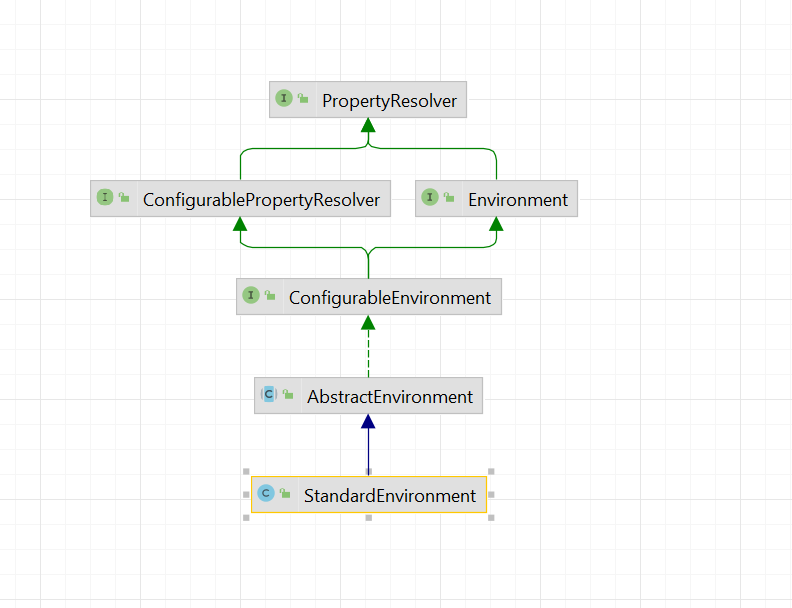

Spring配置属性管理--Environment
本文最后更新于：2022年9月23日 中午
在上一篇文章中 Spring配置属性管理—Value注解解析我们从@Value注解入手大致讲解了一下配置属性在Spring项目中应用的基本原理，本文将会围绕Spring的Environment对org.springframework.core.env包中的重要类进行进一步的解析。
The Environment interface is an abstraction integrated in the container that models two key aspects of the application environment: profiles and properties.
A profile is a named, logical group of bean definitions to be registered with the container only if the given profile is active. Beans may be assigned to a profile whether defined in XML or with annotations. The role of the Environment object with relation to profiles is in determining which profiles (if any) are currently active, and which profiles (if any) should be active by default.
Properties play an important role in almost all applications and may originate from a variety of sources: properties files, JVM system properties, system environment variables, JNDI, servlet context parameters, ad-hoc Properties objects, Map objects, and so on. The role of the Environment object with relation to properties is to provide the user with a convenient service interface for configuring property sources and resolving properties from them.
在Spring的官方文档中我们可以得知，在Spring框架中Environment主要负责两个Profiles于Properties两个部分。这两个部分对于我们而言基本上是耳熟能详的了，Profiles通常用于应用区分环境（例如测试、预发、正式加载不同的属性配置或者是Bean配置），Properties则是Spring用于管理配置文件属性的重要组件。本文我们重点关注一下Properties相关的原理。
1 | |
除了在上一篇文章中提到的利用@Value注解来获取配置属性以外，我们还可以通过上面的代码片段利用Environment来获取到配置属性（通常在应用中使用的是自动注入的Environment），默认单机应用的情况下在ApplicationContext中的Environment的具体实现类是StandardEnvironment，在其中配置了两个默认的PropertySource(属性数据源)分别是JVM系统数据以及操作系统环境变量属性，在Spring Web应用中则是由StandardServletEnvironment负责具体的实现，增加了Servlet配置相关的数据源。

我们围绕这张UML类图来分析StandardEnvironment是如何为Spring应用程序提供属性配置的。
PropertyResolver定义了从属性配置源的获取属性的基本功能接口，主要包含三种类型的接口：获取字符串类型属性、获取指定类型的属性以及利用属性解析字符串中的占位符。
ConfigurablePropertyResolver进一步完善了属性相关的接口定义，提供了自定义属性解析的相关接口，例如配置属性类型转换器、占位符设置等。
而在ConfigurableEnvironment中则定义了获取属性源的相关的接口，在这个接口中我们可以注意到，默认情况下Environment一定会存在两个属性，一个是SystemProperties另一个是SystemEnvironment。
再往下则是AbstractEnvironment，在这个抽象类中实现了大部分的属性相关功能，总的来说可以分为两个部分，也是最重要的两个部分，负责属性存储管理的MutablePropertySources以及负责属性解析的ConfigurablePropertyResolver。
StandardEnvironment与StandardServletEnvironment实际上并没有实现太多的功能，而是根据自己不同的特性为AbstractEnvironment添加了默认的属性源。
MutablePropertySources
MutablePropertySources实现了PropertySources接口，PropertySources定义了属性源PropertySource容器相关的接口（例如遍历属性源、根据名称获取属性源等），PropertySource与Java中常用的Properties类似，不同的是除了定义了查询属性的方法外，每个属性源还包含一个属性源的名称。
在MutablePropertySources中，使用一个CopyOnWriteArrayList来存储PropertySource，为什么用的不是Map来保存呢？因为不同的属性源是有优先级区别的，高优先级属性会覆盖低优先级的属性（MutablePropertySources提供了addFirst、addLast属性）。那为什么用的不是普通的List而需要用的是CopyOnWriteArrayList呢，因为CopyOnWriteArrayList提供了更加稳定的遍历功能，获取属性源的时候如下所示使用的是遍历的方式，而属性源的变更在应用中通常是低频的。
1 | |
在spring-core的env包下提供了两种比较常用的PropertySource的具体实现类，分别是以Properties作为数据源的PropertiesPropertySource、以Map对象作为数据源的MapPropertySource，以存储系统环境变量的SystemEnvironmentPropertySource为例，继承了MapPropertySource，将System.getenv()返回的属性转换为Map作为数据源，默认的属性源的名称是systemEnvironment。
在前面提到默认的情况下Environment中包含两个JVM系统属性与操作系统属性，那是在什么时候被添加到AbstractEnvironment中的MutablePropertySources的呢，回到StandardEnvironment的customizePropertySources中，这个函数主要是用于不同的Environment来添加自定义的属性。
1 | |
ConfigurablePropertyResolver
在上一篇文章中我们提到了无论是AbstractEnvironment还是PropertySourcesPlaceholderConfigurer中，真正负责属性解析的都是PropertySourcesPropertyResolver。PropertySourcesPropertyResolver继承自AbstractPropertyResolver，AbstractPropertyResolver实现了属性解析的大部分的功能模版，例如使用PropertyPlaceholderHelper解析占位符，利用ConfigurableConversionService完成属性到目标类型的转换等，而PropertySourcesPropertyResolver负责数据源的存储以及实现属性获取的基本功能。以下面的函数为例，PropertySourcesPropertyResolver在查找属性时，会遍历所有的PropertySource，首先直接通过key获取属性，当属性不存在的时在解析占位符，最后利用ConversionService完成属性转换。
1 | |
自定义属性数据源
在上一篇文章中我们知道通过配置PropertySourcesPlaceholderConfigurer可以自动的加载本地的Resource文件，与Environment中的属性组合成一个新的PropertySources，在BeanFactory注入ValueResolver中来使得自定义属性添加到属性解析的流程中。然而通过这种方式注入的属性是无法直接通过Environment获取的，通过上面的简单分析，我们可以得知如果想要在应用中加入自定义的属性源只需要获取到Environment中的MutablePropertySources，将属性源添加到其中即可。那么注入的时间点就非常的重要，如果应用启动后再去注入自定义的属性源的话，那么初始化过程中的@Value注解等就无法获取到自定义的属性数据源。
对于纯原生的Spring项目而言，我们可以在创建ApplicationContext时获取到Environment来完成自定义属性源的注入。当然也可以利用BeanPostProcessor结合EnvironmentAware来获取到Environment完成，但这种方式只受益于Bean，对于在其之前执行的BeanPostProcessor则不生肖。
对于Spring Boot项目而言实际上是有比较明确的注入点的，我们来看下SpringBoot启动的代码片段。首先会根据SPI获取到项目中所有的SpringApplicationRunListeners，然后创建Environment，在prepareEnvironment函数中创建完Environment后会调用listeners.environmentPrepared通过EventPublishingRunListener广播ApplicationEnvironmentPreparedEvent事件，EnvironmentPostProcessorApplicationListener在收到事件后会获取到应用中的EnvironmentPostProcessor调用postProcessEnvironment来自定义处理Environment。在这个监听器中处理自定义数据源的注入是最早的一个注入点（在后续Nacos-spring-boot的项目中我们也会提到）。ConfigDataEnvironmentPostProcessor即是利用了这一机制来完成application.properties配置的加载与注入。
1 | |